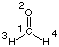
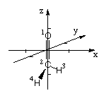

Geometry Definition
Two principally different formats can be used to describe the structure
of the system in Gaussian input files. Both will be described here using
formaldehyde as an example.
1) Z-Matrix
This first format uses internal coordinates describing the positions of
atoms relative to each other:
C1
O2 1 r2
H3 1 r3 2 a3
H4 1 r4 2 a4 3 d4
r2=1.20
r3=1.0
r4=1.0
a3=120.
a4=120.
d4=180.
|
| 
|
Structure definition starts here at the central carbon atom of formaldehyde.
The label "1" can be omitted, but its inclusion facilitates construction of larger
systems considerably. The second line specifies location of the oxygen atom:
O2 1 r2
In this case O2 is located a distance "r2" away from atom 1. The actual distance
is specified through variable r2 in order to indicated a parameter available for optimization.
It is important to recognize at this point that this does not imply any type of bond
between these two centers. The third line is used to specify location of one of the
two hydrogen atoms in formaldehyde:
H3 1 r3 2 a3
Atom 3 is connected in this case to atom 1 at distance r3 and with a bond angle of a3
to atoms 1 and 2. The fourth line defines location of atom 4:
H4 1 r4 2 a4 3 d4
Hydrogen atom H4 is located a distance r4 away from atom 1, forms a bond angle of a4 with
atoms 1 and 2, and forms a dihedral angle of d4 with atoms 1, 2, and 3.
Definition of the atoms contained in the system ends with one blank line and is followed by
a list of variable names and their original values. In the current example there are six
variable parameters r2, r3, r4, a3, a4, and d4 with initial values of 1.20, 1.0, 1.0, 120.,
120., and 180. Distances are expected to be given in Angstroms and angles in degrees.
Please note that a meaningful choice of initial values for the structural parameters
is of ultimate importance for a well working geometry optimization.
A final blank line concludes the input section. Some typical errors in Z-Matrix construction
are:
- definition of distances in integers (rather than real numbers)
- differences in the variable names between the first and second part
- definition of atoms relative to other centers that have not yet been defined.
As an example, location of atom H3 cannot be defined relative to atom H4.
The symmetry properties of a system can be expressed in a Z-Matrix through the proper choice
of variable names. Using the example of formaldehyde again, we note that the system is
of C2v symmetry. This implies that both H-C bond lengths as well as H-C-O
bond angles are identical, and that all atoms must be located in one plane. A properly
modified Z-matrix for this system is:
C1
O2 1 r2
H3 1 r3 2 a3
H4 1 r3 2 a3 3 180.0
r2=1.20
r3=1.0
a3=120.
Compared to the previous Z-Matrix we note that identical variable
names are used now for the H-C bond lengths and H-C-O bond angles. Also, a
constant value of 180.0 degrees has been given for the H-C-O-H dihedral angle.
All these changes lead to a reduction of the number of variables from six
(without accounting for symmetry) to three.
2) Cartesian Coordinates
The same structure can also be defined in cartesian coordinates (absolute coordinates in a
cartesian coordinate system) with the x-, y-, and z-coordinates given from left to right:
C 0.000000 0.000000 -0.537500
O 0.000000 0.000000 0.662500
H 0.000000 0.866025 -1.037500
H 0.000000 -0.866025 -1.037500
|
| 
|
Even though this format is straight forward, it is less practical as larger structures are intuitively
more difficult to describe and information on optimization variables are more difficult to include.
For many structures, however, cartesian corrdinates can be obtained from databases (e.g. the Protein
Database (PDB), or the Cambridge Crystallographic Database).
last changes: 16.10.2004, HZ
questions & comments to: zipse@cup.uni-muenchen.de